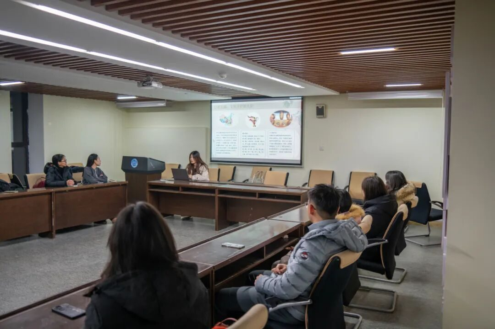
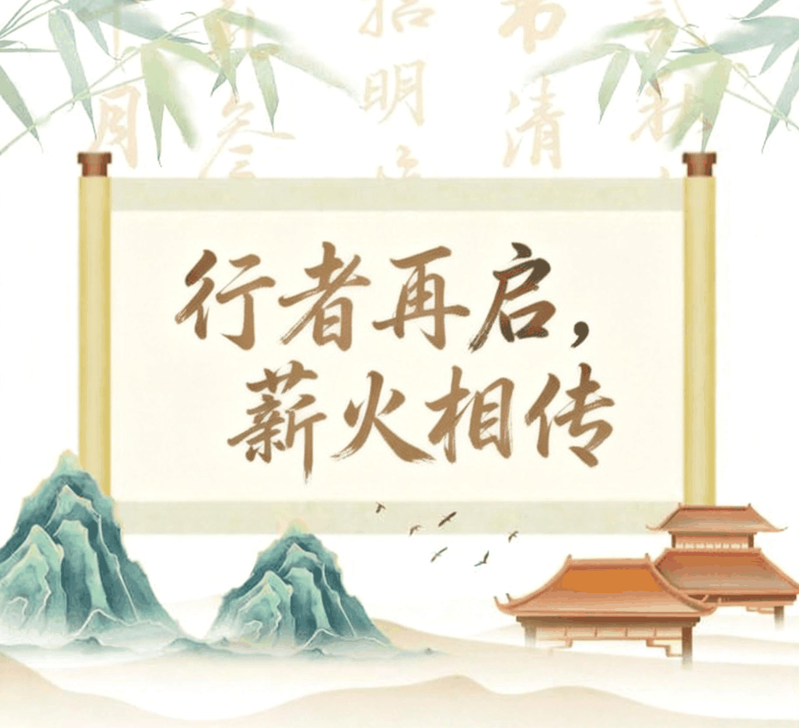
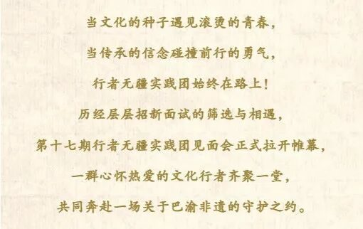
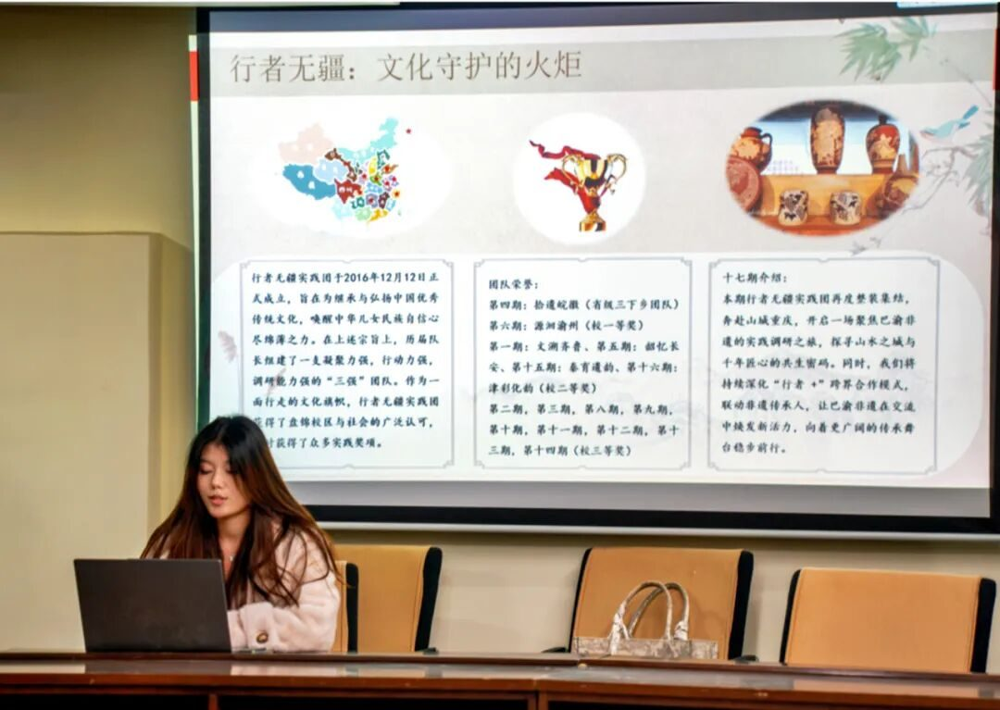
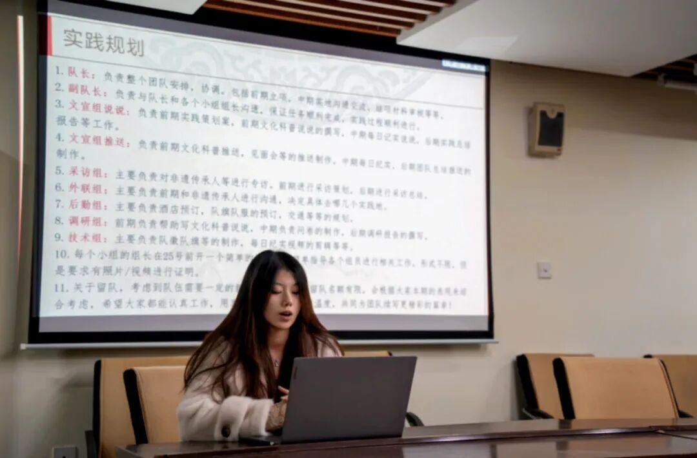
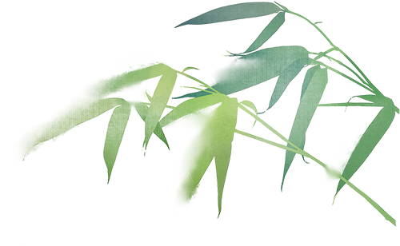
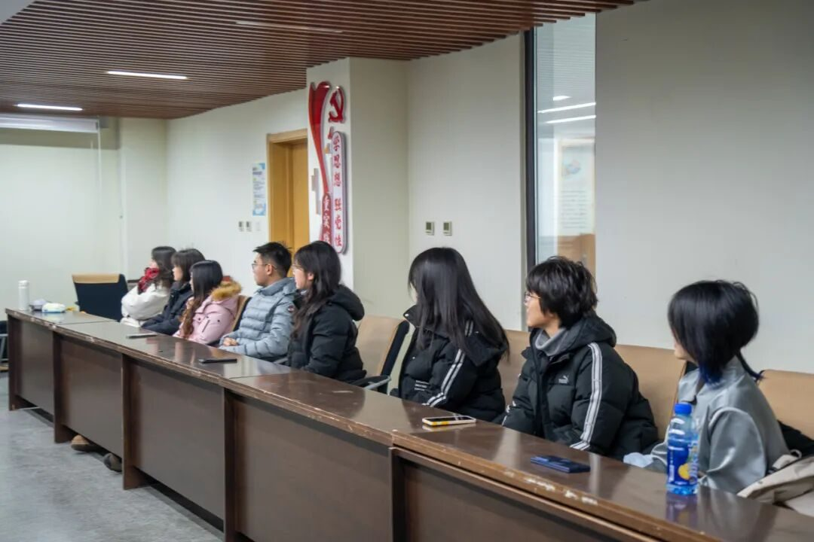
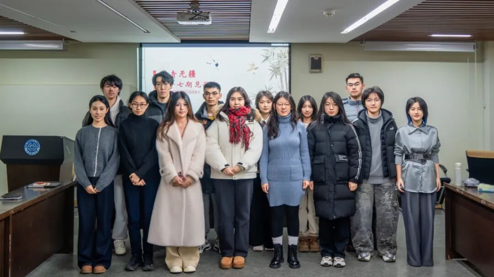
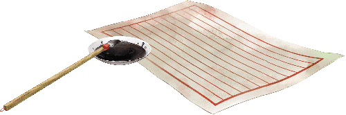

行者再启，薪火相传



以热爱为帆，赴文化之约
从线上报名表的字里行间，到线下面试中的真诚畅谈，我们见证了无数同学对传统文化的赤诚与向往。每一份认真填写的报名表，都寄托着对非遗传承的好奇与期待；每一次从容自信的表达，都闪烁着年轻一代的责任与担当。如今，第十七期行者无疆实践团已集结完毕，全新征程，即将启航！
初心如磐，共话征程

见面会上，队长首先带领大家回顾了团队成立以来的文化足迹。从“文溯齐鲁”到“津彩化韵”，从校级奖项到省级荣誉，每一座奖杯、每一次认可，都凝聚着历代行者的汗水与初心。这份积淀，是荣誉，更是前行的底气。本期我们将再度整装出发，奔赴山城重庆，聚焦巴渝非遗，探寻山水之城与千年匠心的共生之路，让传统在对话中焕发新生。
分工安排：各展所长，协同前行
随后，队长详细解读了团队的分工安排。文宣、采访、外联、后勤、调研、技术——每个岗位都至关重要。我们不仅是一个团队，更是一个紧密协作的大家庭。在这里，每个人都身兼数职，互相帮助，共同成长。这份分工，既是责任的明确，更是信任的传递，让每位成员都能在实践中发挥所长、收获成长。

自我介绍：因热爱相聚，为传承同行
在自我介绍环节，成员们依次分享了自己的专业、兴趣以及加入行者无疆的初衷。一句句真挚的表达，让彼此从陌生到熟悉。相同的热爱让大家跨越距离相聚于此，而这份对文化传承的共同追求，也将成为未来并肩前行的最强动力。
实践规划：步履不停，奔赴山海
方向明晰，方能行稳致远。见面会上，队长详细解读了本期的实践规划：前期将完成实践策划案、文化科普内容创作、采访策划、资源对接、后勤保障等准备工作；中期将深入重庆各地，开展非遗传承人专访、实地调研、问卷收集等核心任务；后期则聚焦总结报告撰写、纪实视频剪辑、成果推广等工作。


答疑解惑：畅所欲言，打消顾虑
为了让成员们更安心地投入实践，见面会设置了专门的答疑环节。大家踊跃提问，从实践时间的具体安排、调研地点的选择，到工作中可能遇到的困难、团队的支持保障等，队长都一一耐心解答，消除了大家的疑虑。

我们将带着对传统文化的敬畏之心，走进重庆的大街小巷，对话非遗传承人，记录匠心故事；我们将以青年视角，借助文字、影像与新媒体，让巴渝非遗被看见、被记住、被热爱；我们将秉持“行者无疆”的信念，步履不停，在传承与创新中，为优秀传统文化注入青春活力。
第十七期行者无疆实践团，已整装待发！
让我们共同期待这场巴渝非遗之旅，见证文化的力量，书写属于行者的青春篇章！

来源 | 行者无疆实践团
文字 | 张思羽
图片 | 行者无疆实践团
编辑 | 尹竞翎
审核 | 刘辰锡
责编 | 邹靓靓 周 亮